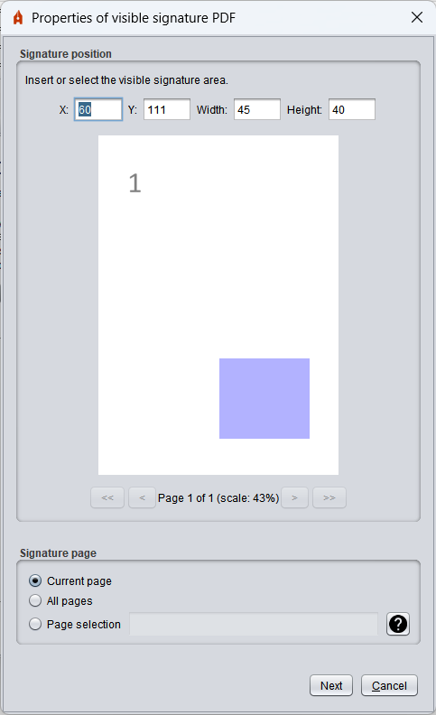
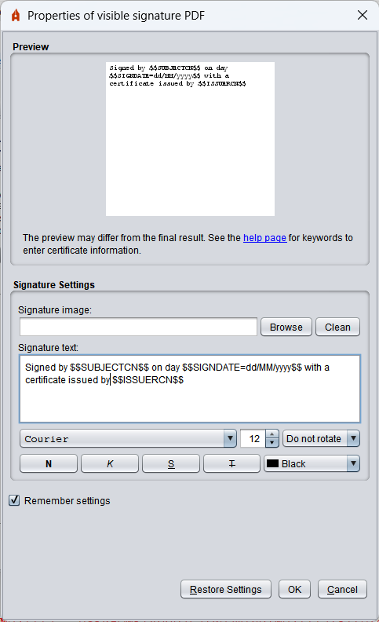
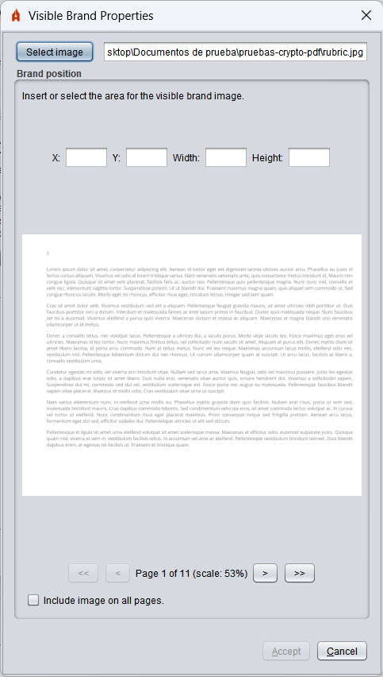

Properties of visible signatures PDF
By enabling the creation of visible signatures PDF, the user will be given the possibility to select a signature area on the PDF to be signed in PAdES format.

This menu allows you to use the mouse to select a rectangular area from one of the pages of the PDF.
- X: Number of pixels on the X axis at the beginning of the signature area.
- And: Number of pixels on the Y axis at the beginning of the signature area.
- Width: Number of pixels that extends horizontally to the signature area.
- Height: Number of pixels vertically extending the signature area.
- (Preview of PDF page): The user must click and drag the mouse over this area to select the visible signature area. The positions and the size of the signature area are expressed in pixels with respect to the scale on which the image of the page is shown.
- <<: Button to move the display to the first page of the PDF.
- <: Button to move the display to the front page of the PDF. You can reproduce this behavior by pressing the left cursor key on your keyboard.
- >: Button to move the display to the next page of the PDF. You can reproduce this behavior by pressing the "right cursor" key on your keyboard. If we are on the last page of the PDF this option will allow us to create a blank page at the end of the document in which the signature can be inserted.
- >>: Button to move the display to the last page of the PDF.
In this same window, at the bottom, it is allowed to indicate the page or pages where the visible signature must appear. The options are as follows:
- Current page: The visible signature will appear on the page selected in the top position selector.
- All pages: The visible signature will appear on all pages of the document.
- Page selection: This option allows you to select the page or page range where the visible signature will appear. If you want to indicate a page or several pages where the visible signature is displayed, you can indicate page by page with a comma separation (1,4.7:
It is stamped on pages 1, 4 and 7 or indicating a range of pages through a script (1-8: It is printed on the pages from 1 to 8). It is also possible to indicate the pages according to their position since the end of the document. For this, the position with a negative value (-2: Stamp the signature on the penultimate page). These mechanisms can be combined. For example:
- 3-6, 8, 10--1: It indicates that it will be stamped on the pages from 3 to 6, on 8 and from 10 to the last page.
The button containing a question mark (?) allows you to open the support page for the visible signature.
The signature area disappeared by changing the screen from the PDF. Select the area for the visible signature of the PDF and then press the Next button.
Next, a new window will be displayed in which the user will be able to configure the appearance of the signature.

This interface allows you to configure the following properties for visible signature:
- Preview. The image file can be configured by clicking on the preview of the signature. Images with transparencies are not allowed.
- Signature settings:
- Signature image: Image path with signing section. It can be selected by the Browse button and removed by the Clean button. Transparencies in the image are not supported and will be omitted if found.
- Signature text: Text to be shown in the signature of the PDF. For the configuration of the text to be shown in the signature it is possible to use a number of key words which will be replaced by the appropriate texts of the holder or issuer of the signature certificate at the time of signature. These are:
- $$SUBJECTCN$$
- Common name (CN, Common Name) within the X.500 Principal of the signature certificate holder.
- $$ISSUERCN$$
- Common name (CN, Common Name) within the X.500 Principal of the issuer of the signature certificate.
- $$CERTSERIAL$$
- Serial number of the signature certificate.
- $$SIGNDATE=PATTERN$$
- Date of signature, where SKIPPER must indicate the format in which the date must be shown, following the scheme defined by Oracle for the SimpleDateFormat class.
- $GIVENNAME$
- Name of the holder (G, Given Name) declared in the certificate. This value may not appear on the certificate, in which case the pattern will be replaced by empty chain.
- $$SURNAME$$
- Surname of the holder (SN, Surname) declared in the certificate. This value may not appear on the certificate, in which case the pattern will be replaced by empty chain.
- $$ORGANIZATION$$
- Organization (O, Organization) of the holder declared in the certificate. This value may not appear on the certificate, in which case the pattern will be replaced by empty chain.
- $$PSEUDONYM$$$
- Pseudonym of certificate. This value may not appear on the certificate, in which case the pattern will be replaced by empty chain.
- $$OU$$
- Organizational Unit (OU, Organization Unit) of the certificate. This value may not appear on the certificate, in which case the pattern will be replaced by empty chain.
- $$OUS$$
- List of Organizational Units of the certificate. In case there were more than one, they would all be presented separated by ", ". The certificate may not have defined Organizational Units, in which case the pattern will be replaced by empty chain.
- $$TITLE$$
- Information on the position or role of the certificate holder. This value may not appear on the certificate, in which case the pattern will be replaced by empty chain.
- $$REASON$$
- That is why the PDF is signed, configured the signature operation by means of the property "Reason". The pattern shall be replaced by empty chain if this value has not been established.
- $$LOCATION$$
- The city in which the PDF is signed, configured the signature operation by means of the "ProductionCity" property. The pattern shall be replaced by empty chain if this value has not been established.
- $$CONTACT$$
- Contact information of the signatory of the PDF, set up the signature operation by means of the property "firmContact". The pattern shall be replaced by empty chain if this value has not been established.
- The following format options can be applied to the text:
- Font.
- Font size.
- Text rotation.
- Font style (Bold, Cursive, Underlined or Tachado).
- Text color.
The "Remember settings" box allows you to save the set settings (text, image and styles) for use in the following signatures. The "Restore default settings" button will return the panel settings to the default values.
If you do not want to add a visible signature to the PDF, before pressing the sign button on the signature screen, make sure that the "Make the visible signature within the PDF" box is not selected.
Properties of visible marks
By enabling the insertion of visible marks in the PDF, the user will be given the opportunity to select an area on the PDF he will be signing.

This menu allows you to use the mouse to select a rectangular area on one or all of the pages of the PDF.
- Select image: Clicking this button will open a window in which you will be able to select the brand image. No transparencies are allowed in the image and will be omitted if found
- X: Number of pixels on the X-axis where the mark is placed.
- And: Number of pixels on the Y axis where the mark is placed.
- Width: Number of pixels to be extended horizontally to the mark.
- Height: Number of pixels to be displayed vertically.
- (Preview of PDF page): The user must click and drag the mouse over this area to select the area where the brand will be placed.
- <<: Button to move the display to the first page of the PDF.
- <: Button to move the display to the front page of the PDF. You can reproduce this behavior by pressing the left cursor key on your keyboard.
- >: Button to move the display to the next page of the PDF. You can reproduce this behavior by pressing the "right cursor" key on your keyboard.
- >>: Button to move the display to the last page of the PDF.
- Include image on all pages: Check to select that the mark is inserted in all pages of the PDF.
The brand area disappeared when you changed the page of the PDF. Select the page, image and area for the mark visible in the PDF and then press the OK button.
If you do not want to add a visible mark to the PDF, before pressing the sign button on the signature screen, make sure that the "Insert a visible mark into the PDF" checkbox is not selected.